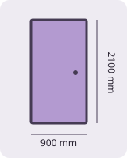

企业空间演示
示例资料 · Sample content

语音体验 / Voice demo
麦克风测试仅在本机运行。 The microphone check stays on this device.
示例问答播放 / Play a synthetic question and answer
示例资料 · Sample content

麦克风测试仅在本机运行。 The microphone check stays on this device.
示例问答播放 / Play a synthetic question and answer